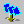

Importing image sequences
SCI Companion will let you choose a series of image files (bmps, gifs, tifs, jpegs, etc...)
to use as the cels in a loop.
Importing images
- Click on the Import  button on the toolbar.
- The file dialog will open, and you can choose multiple files by SHIFT or CTRL clicking.
- The currently selected loop will be replaced by the selected images.
Notes
- The images are sorted alphabetically, so they will show up as ImageName.001, ImageName.002, ImageName.003, etc...
in the view
- If the Dither images checkbox is checked in the file dialog, a halftone palette
will be used when importing the images